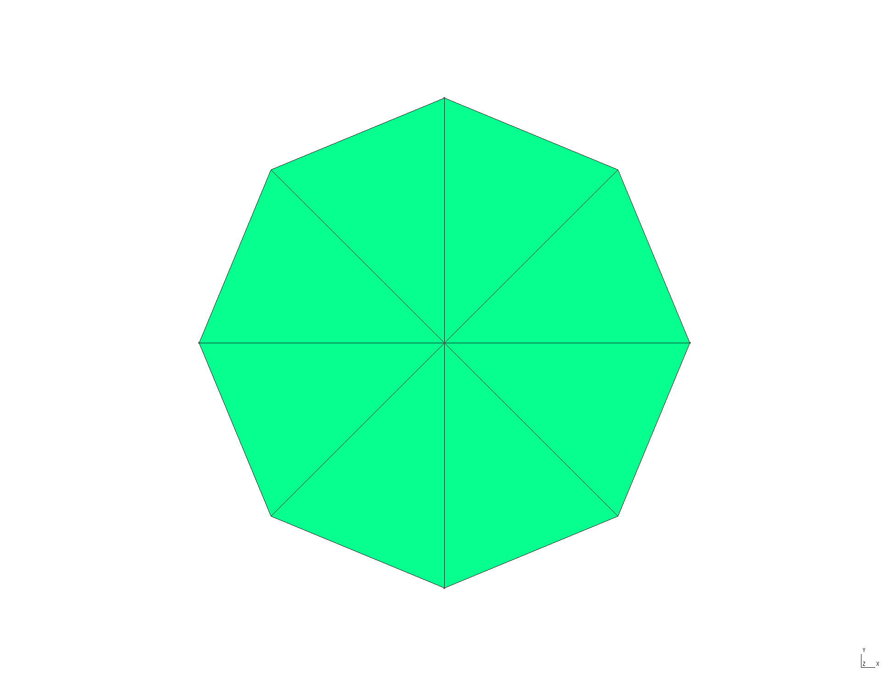
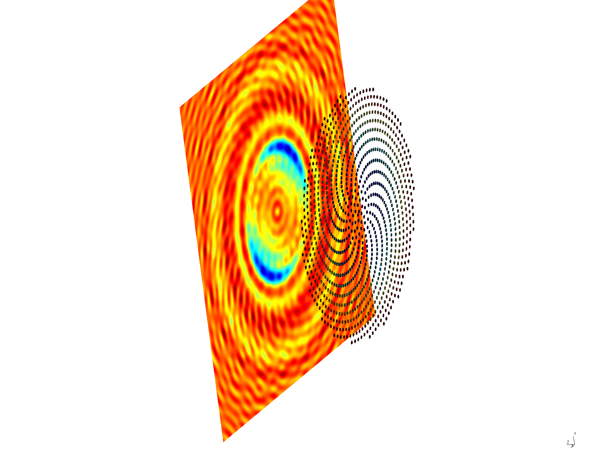
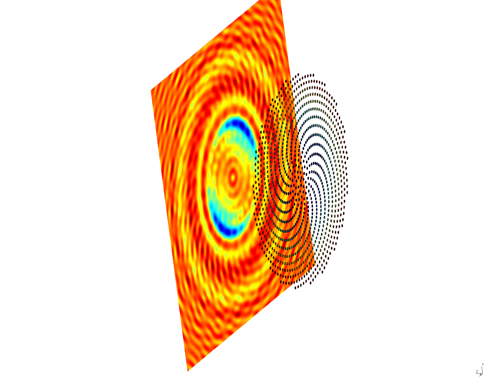

Diffraction patterns of aperiodic particle arrays: Vogel spirals
In this tutorial we reproduce experimental and theoretical results of Trevino, Cao, and Dal Negro on diffraction patterns produced by light shining on aperiodic spiral arrays of scatterers. Our reference is this paper:
- Jacob Trevino, Hui Cao, and Luca Dal Negro, ``Circularly Symmetric Light Scattering from Nanoplasmonic Spirals,'' Nano Letters 11 2008 (2011). DOI: dx.doi.org/10.1021/nl2003736
The files for this tutorial are in the SpiralArrays
subdirectory of the SCUFFTutorial archive.
GMSH geometry and mesh files for small thin disc

JULIA code to produce Vogel spirals
Here's a julia code
that inputs a .msh file name and some geometrical parameters
and produces a .scuffgeo file describing
Vogel spiral
consisting of the mesh replicated many (hundreds or thousands)
times in an aperiodic spiral pattern:
Usage examples:
MakeSpiralArray(1000,"Disc8",SpiralType="GSpiral")
MakeSpiralArray(1000,"Disc8",SpiralType="A1Spiral")These produce files named Disc8_GSpiral1000.pp
and Disc8_A1Spiral1000.pp
Disc8_GSpiral1000.ppDisc8_A1Spiral1000.ppImaging diffraction patterns with scuff-scatter
The --FVMesh option to scuff-scatter
allows you to specify an arbitrary surface mesh on which you
wish to visualize field data.
For each --FVMesh you input,
scuff-scatter will produce a .pp file
plotting the fields at the centroid of each panel in the mesh.
Thus, plotting the E-field magnitude at some distance
behind the Vogel spiral yields plots of diffraction patterns.
RunScript#!/bin/bash
BASEDIR=${HOME}/SCUFFTutorial/SpiralArrays
export SCUFF_MESH_PATH=${BASEDIR}/mshFiles
export SCUFF_GEO_PATH=${BASEDIR}/scuffgeoFiles
for N in 100 500 1000
do
for TYPE in G A1 A2
do
GEOM=Disc8_${TYPE}Spiral${N}
ARGS=""
ARGS="${ARGS} --geometry ${GEOM}.scuffgeo"
ARGS="${ARGS} --Lambda 0.633"
ARGS="${ARGS} --PWDirection 0 0 1"
ARGS="${ARGS} --PWPolarization 1 0 0"
ARGS="${ARGS} --FVMesh L5Screen_7400.msh"
ARGS="${ARGS} --FVMeshTransFile L5ScreenTransformations"
ARGS="${ARGS} --FVFuncs |E|"
scuff-scatter ${ARGS}
done
done 
